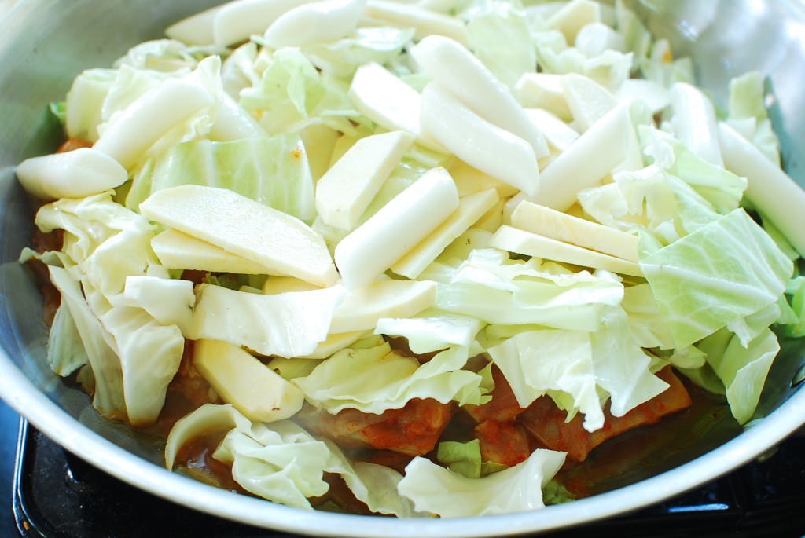

Dakgalbi is a Korean dish made by stir frying chicken, cabbage, sweet potatoes, perilla leaves, scallions, and tteok (Korean rice cake), and other ingredients in a spicy sauce. These are the traditional ingredients, but there are customizable toppings such as cheese and sweet corn.
Chicken and Marinade
1 lbs deboned chicken thigh (or drumstick), cut into bite sized pieces
2 tbs milk
1 tbs soy sauce
¼ tsp ground black pepper
Seasoning Sauce12 garlic cloves, minced
1 tsp ginger, peeled and minced
2 tbs soy sauce
1/2 cup water
1/2 cup gochugaru (Korean hot pepper flakes)
2 tbs rice syrup
1/2 tsp ground black pepper
Vegetables and Other4 oz sliced rice cake, soaked in cold water for at least 10 minutes
8 oz cabbage, cored and cute into bite sized pieces
½ large onion
1 small carat, peeled and sliced
1-2 green chili peppers, sliced
¾ cup peeled sweet potato, sliced into ¼ inch thick bite size pieces
12 perilla leaves, cut into ½in strips
½ cup water
Fried Rice (Optional)1 bowl of rice
¼ cup chopped fermented kimchi
1 package of dried seaweed
1 tsp sesame oil
1. Combine the ingredients for the “chicken and marinade” in a bowl and mix together with a spoon. Cover and set aside.
1. Combine the ingredients for the “seasoning sauce” in a bowl. Mix well with a spoon and set aside.
1. Heat the pan ocer medium high heat. Add onion, carrot, green chili pepper, sweet potato, rice cake and marinated chicken into the pan.
2. Cover and cook for 3-4 minutes over medium high heat. Turn down the heat to medium if ingredients start sticking to the pan. Open and stir. Add your perilla leaves. Cover and cook for another 13-15 minutes over medium heat, stirring occasionally until the chicken and sweet potato are cooked thoroughly.
4. Turn off the heat. Enjoy your dakgalbi!
1. Mix in your bowl of rice, kimchi, crushed dried seaweed and sesame oil with the leftover sauce and vegetables after finishing the dakgalbi. Stir fry over medium heat for 2-4 minutes and serve.